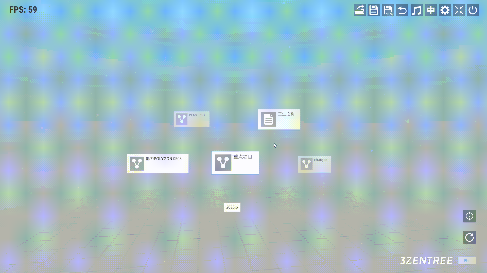

三生之树操作指南(v0.2b) - 结点交互
结点交互
鼠标右键：
-
点开子菜单：
鼠标放置在结点上后，鼠标图标变为一个手掌，提示当前鼠标放置的结点。鼠标右键点击，鼠标图标变为抓握的手并弹出结点子菜单。
鼠标左键：
-
拖动：
鼠标放置在结点上后，鼠标图标变为一个手掌，提示当前鼠标放置的结点。当鼠标左键按下时，鼠标图标变为抓握的手，提示当前结点正在拖动。
-
点击查看详情：
鼠标放置到结点图标上时鼠标变为一个眼睛，提示该结点图标可点击。当鼠标左键点击，会弹出结点的详情。

鼠标左键+滚轮：
-
结点纵深变化：
鼠标左键点击鼠标变为一个抓握的拳头提示结点可以操作。当鼠标左键不松，滚轮向下滚动时结点拉近；当鼠标左键不松，当滚轮向上滑动时结点推远。